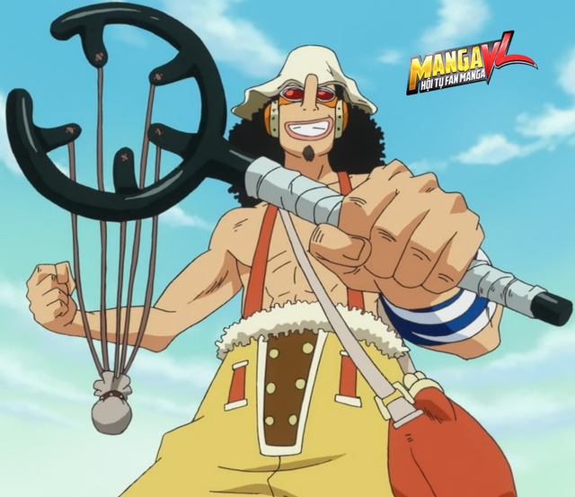

Thong tin ve One Piece

Usopp
Usopp là xạ thủ của băng hải tặc Mũ Rơm, được biết đến với biệt danh Thánh nói dóc hay Thánh bốc phét. Tác giả cũng "khai sinh" thánh này đúng ngày Cá tháng Tư (1/4). Từ "Uso" trong tên của Usopp cũng có nghĩa là "nói dối" hay "sự lừa dối".
Khi tách khỏi băng Mũ Rơm, Usopp hạ cánh vào một hòn đảo và trở nên mập mạp vì ăn quá nhiều.
Sau thời gian 2 năm, ngoại hình của Usopp có nhiều thay đổi. Cậu đã giảm cân rất nhiều, tóc dài hơn và đặc biệt sở hữu hình thể tráng kiện hơn. Sau timeskip Usopp có một cặp kính mới quanh cổ và có một số tai nghe. Cậu cũng có một chòm râu dê nhỏ cùng với một cái nón trắng mới trên đầu.
Oda nói rằng Usopp là đại diện của Armadillo. Ông sử dụng màu vàng để đại diện cho Usopp, và người cậu cũng thường có mùi thuốc súng.
Xuất thân
Usopp là con trai Yasopp, một hải tặc gia nhập băng của Shanks”tóc đỏ”. Ông đã ra khơi bỏ lại vợ và con trai, từ đó Usopp bắt đầu nói dối mọi người rằng có hải tặc tới. Cậu nói dối lần đầu khi cậu hét lên với mẹ mình rằng hải tặc đang tới trong niềm hi vọng có thể kéo dài sự sống của bà.
Nhiều người dân đã đuổi đánh và ném đồ vật vào Usopp trước những lời nói dối của cậu khiến cậu chạy quanh làng, nhưng rốt cuộc họ vẫn phải chịu đựng những trò đùa của Usopp. Một số người còn lấy việc đó ra làm đồng hồ báo thức. Ngoài việc nói dối về chuyện hải tặc tấn công ra, cậu còn dựng nên nhưng câu truyện về những chuyến phưu lưu để kể cho một cô gái tên là Kaya. Và chính câu chuyện "không có thật" của Usopp đã giúp Kaya có lại được niềm tin vào cuộc sống.
Usopp tự gọi mình là hải tặc và thu nhận 3 đứa nhóc: Ninjin,Tamanegi và Piiman làm thành viên trong băng của cậu, cậu đặt tên là “băng hải tặc Usopp”.
Sogeking chính là một con người khác của Usopp tại Water 7 và Sảnh Enies, khi cậu đã ra khỏi băng Mũ Rơm. Sau đó thấy mọi người cố gắng cứu Robin cậu cảm thấy tội lỗi vì đã bỏ đi, cậu đã cải trang mình bằng một chiếc mặt nạ và áo choàng và bắt đầu tự xưng là “Sogeking” cùng tham gia giải cứu Robin.
Usopp thường tham gia mấy trò ngốc nghếch và khoe về những chiêu thức mới cùng Luffy và Chopper ,cậu có một mối quan hệ thân thiết như anh em với họ.Cả cậu và Luffy đều mong muốn chờ đợi ngày được gặp băng hải tặc “Tóc đỏ”: Luffy thì muốn gặp lại Shanks còn Usopp thì mong được gặp cha mình. Cùng vì một mục đích và thực tế là họ lại cùng độ tuổi, do đó Luffy và Usopp đã có một sự mối quan hệ đặc biệt ngay khi họ gặp nhau. Chopper thì yêu thích những câu truyện của Usopp. Cả Luffy và Chopper đều rất thất vọng trong lần Usopp rời khỏi băng.
Tính cách
Usopp có sở thích nói dối từ nhỏ. Những câu truyện của Usopp đã giúp Kaya (một cô gái sống cùng làng với usopp) có lại niềm tin vào cuộc sống.
Ngoài ra Usopp còn là một người rất nhút nhát có thể coi là nhút nhát nhất băng Mũ Rơm. Tuy nhiên khi đeo chiết mặt nạ Sogeking, Usopp lại có một ý chi chiến đấu kiên cường.
Usopp là một người đa cảm, cậu dễ khóc và mất bình tĩnh trong những phút căng thẳng.
Usopp rất dễ sợ hãi, lo lắng, sự hèn nhát của Usopp là kết quả của nỗi sợ hãi trong cậu. Hầu hết những lời nói dối của cậu được nói ra nhằm mục đích khiến cậu cảm thấy tốt hơn. Cậu là người đầu tiên đưa ra những cái cớ để tránh đặt bản thân vào những tình huống nguy hiểm. Lí do thường xuyên nhất mà cậu sử dụng là cậu mắc phải một căn bệnh, ví dụ như : “bệnh không thể vào hang”
Usopp thường ảo tưởng rằng mình là thuyền trưởng. Mặc dù rất sợ hãi, cậu vẫn đối mặt với hiểm nguy vì những người bạn và đôi khi vì cả những người không quen biết.